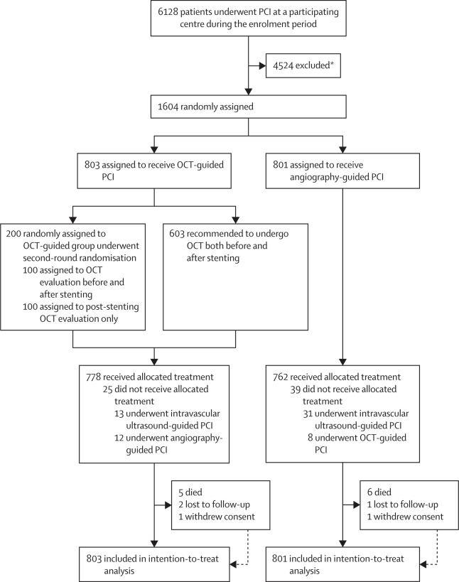
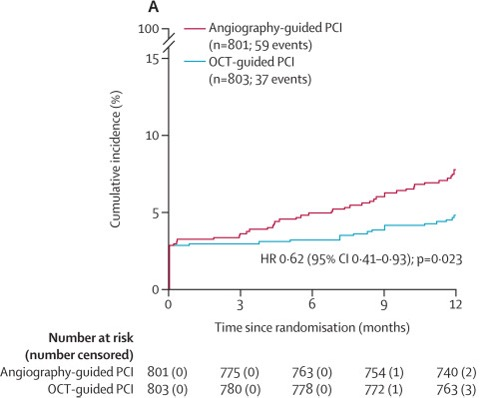
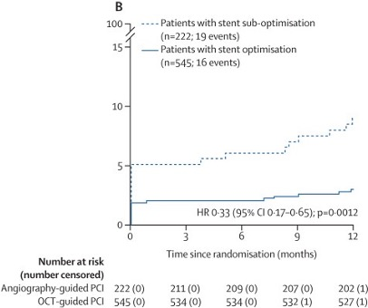
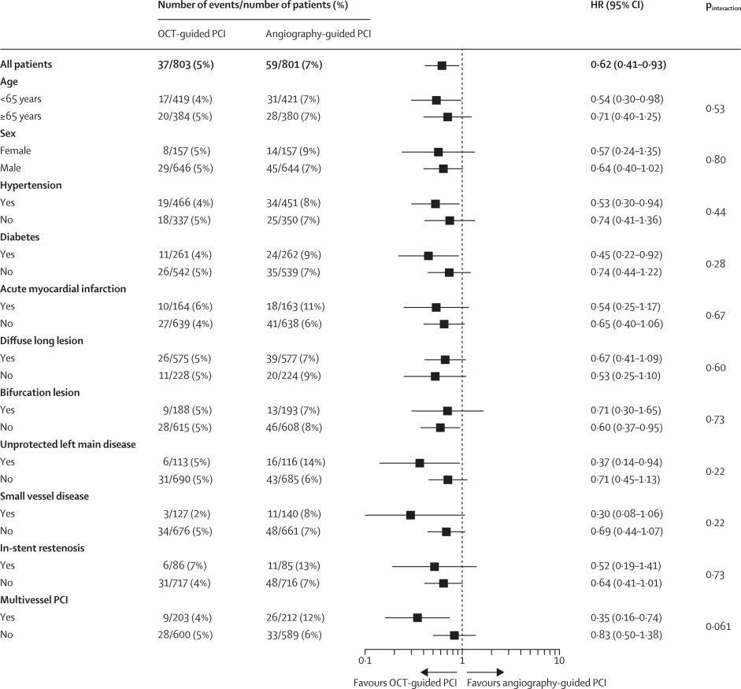

OCCUPI
an investigator-initiated, multicentre, randomized, open-label, superiority trial in South Korea
Terminology
- Optical coherence tomography(OCT): an imaging technique uses interferometry with short-coherence-length light to obtain micrometer-level depth resolution to form two- and three-dimensional images.
- angiography: an imaging technique used to visualize desired target performed by injecting a radio-opaque contrast agent into the blood vessel and imaging using X-ray.
- percutaneous coronary intervention(PCI): a treatment to open a blocked artery that carry oxygen-rich blood through body.
Introduction
Despite treatments with percutaneous coronary intervention (PCI), challenges remain especially for patients with complex lesions. PCI, a non-surgical method for improving blood flow may lead to suboptimal outcomes in cases with complex lesions.
The main goal of the OCCUPI study is to evaluate whether PCI guided by OCT results in better clinical outcomes for patients with complex lesions. Specifically, the study compares the incidence of Major Adverse Cardiac Events (MACE) such as cardiac death, myocardial infarction, and stent thrombosis.
Recent studies
Although two relevant randomised trials investigated the effect of OCT-guided PCI on clinical outcomes, the ILUMIEN IV trial enrolled patients with not only angiographically complex lesions but also with high clinical risks or comorbidities (eg, diabetes), and the OCTOBER trial focused only on bifurcation lesions among various anatomical types of complex lesions.
Authors found no previous randomized controlled trials that compared clinical outcomes of OCT-guided PCI with angiography-guided PCI exclusively in patients with overall complex lesions.
Method
study design and patients
- Designed to test 2-hyothesis but 2nd hypothesis was excluded due to safety concerns.
- Sample size calculation and endpoint were revised on the basis of the 1st hypothesis alone before patient enrollment began.
- The trial enrolled patients conducted at 20 hospitals in South Korea, aged 19–85 years who required PCI with drug-eluting stents (DES) for complex coronary artery lesions. After initial diagnostic angiography, patients with complex lesions were identified and randomized into two groups: one receiving PCI with OCT guidance and the other with angiography guidance alone.
Method
randomization and masking
- Sample size calculation and endpoint were revised on the basis of the 1st hypothesis alone before patient enrollment began.
- Patients were randomly assigned 1:1 to receive PCI with OCT guidance or angiography guidance. Web-response permuted-block randomization(mixed blocks of four or six) was used at each participating site to allocate patients.
Method
procedures
- In the OCT-guidance group, lesion characteristics were evaluated before and after stent placement to optimize stent selection and implantation. Post-stent OCT evaluation was strongly recommended to assess stent expansion, apposition, and edge dissection.
- In the angiography-guidance group, standard angiographic methods were used. Independent core laboratories analyzed all OCT data and angiograms.
Method
outcomes
- The primary endpoint was the occurrence of major adverse cardiac events (MACE), including cardiac death, myocardial infarction, stent thrombosis, or ischemia-driven target-vessel revascularization within one year.
- Secondary endpoints included rates of individual components of the primary endpoint, stroke, and bleeding events, among others.
Method
statistical analysis - Event Rate Assumptions:
- Assumed Event Rate: The event rate for the primary endpoint was assumed to be 10% based on previous pooled patient-level data from six randomized controlled trials. These trials had a median follow-up of 392 days.
- Assumed Risk Reduction: The study hypothesized a 40% risk reduction of major adverse cardiac events for patients undergoing OCT-guided PCI. This assumption was derived from meta-analyses of prior studies comparing intravascular ultrasound with angiography.
Method
statistical analysis - Sample size Calculation
Out of a total of 6,128 patients who underwent PCI to recruit 1,604 patients for the study, 4,524 patients were excluded for not meeting the following selection criteria:
- Absence of complex lesions: To participate in the study, patients needed to have complex coronary artery lesions. Patients who did not have complex lesions as defined by the study were excluded.
- Patients not requiring PCI: Since the study focused on patients who required PCI, those who did not need PCI or had no plans for the procedure were also excluded.
- Other exclusion criteria: Patients younger than 19 years or older than 85 years, as well as those with other medical factors may have been excluded.
Method
statistical analysis - Sample size Calculation
- The sample size was calculated to ensure 80% power to detect a 40% risk reduction in the primary endpoint with a two-sided α of 5% (statistical significance level). In this case, an 80% power means that if the OCT-guided PCI truly has better outcomes, the study has an 80% chance of detecting this effect correctly. An α = 5% means that the study accepts a 5% chance of making a mistake.
- Not all patients are expected to stay in the study for its entire duration, The study anticipated a 10% loss to follow-up. For example, if the target sample size is 1,600, then with a 10% loss to follow-up, only about 1,440 patients would actually complete the study. To account for this, 1,604 patients were recruited.
Method
statistical analysis - Sample size Calculation

Method
statistical analysis - Data Presentation
- Categorical Data: Categorical data were expressed as numbers and percentages.
- Continuous Data: Continuous data were summarized as mean (SD) for normally distributed data and median (interquartile range [IQR]) for skewed distributions.
Method
statistical analysis - Time-to-Event analysis
- The Kaplan-Meier method was used to estimate the cumulative incidence of the primary endpoint (MACE) over 1 year. This method accounts for censored data (patients lost to follow-up or without events at the end of the study).
- The log-rank test was used to compare time-to-event distributions between the two groups.
Method
statistical analysis - Hazard Ratios
- Hazard ratios (HRs) and their 95% confidence intervals (CIs) were calculated using Cox proportional hazards models. These models were employed to estimate the relative risk of experiencing a MACE event between the two groups over time.
- The hazard ratio margin used to establish superiority was 1.0. A hazard ratio less than 1 indicated a lower risk of events in the OCT-guidance group compared to the angiography-guidance group.
- The proportional hazards assumption was assessed using Schoenfeld residuals, a statistical method to check if the HR between the groups remained constant over time.
Method
statistical analysis - Prespecified analysis and Psot-hoc analysis
- Prespecified analyses were conducted in the per-protocol population, excluding patients who did not receive the assigned treatment, allowing for a clearer evaluation of the true treatment effect.
- Post-hoc analysis was conducted in the as-treated population, where patients were analyzed based on the actual treatment they received, regardless of their original assignment.
Method
statistical analysis - Exploratory Subgroup Analyses
- Exploratory analyses were performed across several clinically and angiographically relevant factors, including age, sex, hypertension, diabetes, acute myocardial infarction, long lesions, and bifurcation lesions. The goal of these analyses was to assess the consistency of treatment effects across different patient characteristics.
The study aimed to determine whether OCT-guided PCI had better outcomes in certain subgroups or whether the treatment effect was consistent across all characteristics.
Result
Study Population and Group Allocation
During the study period, a total of 1,604 patients with complex coronary artery lesions requiring PCI were enrolled. Out of these, 803 patients were randomly assigned to the OCT-guided PCI group, and 801 patients were assigned to the angiography-guided PCI group.
The average age of the patients was 64 years, with approximately 80% being male.
Result
Baseline characteristics
- 814 patients (51%) presented with stable angina, and 790 patients (49%) presented with acute coronary syndrome. Data regarding race or ethnicity were not collected.
- The number of target lesions, as well as the median number and length of implanted stents, did not significantly differ between the groups.
- 814 patients (51%) presented with stable angina, and 790 patients (49%) presented with acute coronary syndrome. Data regarding race or ethnicity were not collected.
Result
Baseline characteristics
Baseline Characteristics of OCT-guided vs Angiography-guided PCI
| Age (years) |
64 (57–70) |
64 (58–70) |
| Sex - Male |
646 (80%) |
644 (80%) |
| Sex - Female |
157 (20%) |
157 (20%) |
| BMI (kg/m²) |
24.8 (23.0–26.6) |
24.6 (22.9–26.6) |
| Hypertension |
466 (58%) |
451 (56%) |
| Diabetes |
261 (33%) |
262 (33%) |
| Diabetes requiring insulin |
28 (3%) |
29 (4%) |
| Creatinine clearance <60 mL/min |
53 (7%) |
57 (7%) |
| Dyslipidemia |
684 (85%) |
661 (83%) |
| Current smoker |
149 (19%) |
158 (20%) |
| Previous myocardial infarction |
40 (5%) |
42 (5%) |
| Previous PCI |
171 (21%) |
159 (20%) |
| Previous coronary bypass graft surgery |
10 (1%) |
14 (2%) |
| Previous stroke |
38 (5%) |
46 (6%) |
| Clinical presentation - Stable angina |
391 (49%) |
423 (53%) |
| Clinical presentation - Acute coronary syndrome |
412 (51%) |
378 (47%) |
| Clinical presentation - Unstable angina |
248 (31%) |
215 (27%) |
| Clinical presentation - Non-ST-elevation myocardial infarction |
118 (15%) |
105 (13%) |
| Clinical presentation - ST-elevation myocardial infarction |
46 (6%) |
58 (7%) |
| Left ventricular ejection fraction (%) |
59.5 (8.8) |
59.7 (10.1) |
| Medication at discharge - Aspirin |
784 (98%) |
787 (98%) |
| Medication at discharge - P2Y12 inhibitor |
790 (98%) |
792 (99%) |
| Medication at discharge - Clopidogrel |
611 (76%) |
621 (78%) |
| Medication at discharge - Ticagrelor |
144 (18%) |
139 (17%) |
| Medication at discharge - Prasugrel |
35 (4%) |
32 (4%) |
| Medication at discharge - Statin |
770 (96%) |
770 (96%) |
| Medication at discharge - β blocker |
447 (56%) |
458 (57%) |
| Medication at discharge - ACE inhibitor or ARB |
450 (56%) |
475 (59%) |
Result
Primary Endpoint
99% of patients (1,588 of 1,604) completed 1-year follow-up. The median follow-up duration was 365 days for both groups (IQR 365–365). The primary endpoint (MACE) occurred in 37 patients (5%) in the OCT-guided PCI group and 59 patients (7%) in the angiography-guided PCI group. This corresponds to an absolute reduction in the primary endpoint of –2.8% in the OCT-guided group compared to the angiography-guided group.
Result
Primary Endpoint

Result
Primary Endpoint
Clinical outcomes in the intention-to-treat population, 1 year after randomisation
| Primary endpoint |
|
|
|
|
| Major adverse cardiac event (composite of cardiac death, myocardial infarction, stent thrombosis, or ischaemia-driven target-vessel revascularisation) |
37 (5%) |
59 (7%) |
0.62 (0.41–0.93) |
0.023 |
| Secondary endpoints |
|
|
|
|
| All-cause death |
5 (1%) |
6 (1%) |
0.83 (0.25–2.72) |
0.76 |
| Cardiac death |
1 (<1%) |
5 (1%) |
0.20 (0.03–1.71) |
0.14 |
| Myocardial infarction |
29 (4%) |
40 (5%) |
0.72 (0.45–1.16) |
0.18 |
| Spontaneous myocardial infarction |
7 (1%) |
19 (2%) |
0.36 (0.15–0.86) |
0.022 |
| Target-vessel related |
5 (1%) |
17 (2%) |
0.29 (0.11–0.79) |
0.022 |
| Non-target-vessel related |
2 (<1%) |
2 (<1%) |
0.99 (0.14–6.99) |
0.99 |
| Periprocedural myocardial infarction* |
22 (3%) |
22 (3%) |
1.00 (0.55–1.80) |
0.99 |
| Stent thrombosis |
4 (1%) |
10 (1%) |
0.40 (0.12–1.26) |
0.12 |
| Definite |
2 (<1%) |
4 (1%) |
0.50 (0.09–2.71) |
0.42 |
| Probable |
2 (<1%) |
6 (1%) |
0.33 (0.07–1.64) |
0.17 |
| Ischaemia-driven target-vessel revascularisation |
12 (2%) |
33 (4%) |
0.36 (0.18–0.69) |
0.0022 |
| Target-lesion revascularisation |
9 (1%) |
28 (4%) |
0.32 (0.15–0.67) |
0.0027 |
| Non-target-lesion revascularisation |
3 (1%) |
5 (1%) |
0.59 (0.14–2.47) |
0.47 |
| Any revascularisation |
19 (2%) |
46 (6%) |
0.40 (0.24–0.69) |
0.0009 |
| Stroke |
1 (<1%) |
5 (1%) |
0.20 (0.02–1.70) |
0.14 |
| Bleeding (BARC type 3 or 5) |
4 (1%) |
5 (1%) |
0.80 (0.21–2.97) |
0.74 |
| Contrast-induced nephropathy† |
10 (1%) |
7 (1%) |
1.43 (0.54–3.75) |
0.47 |
| Rate of OCT-defined stent optimisation‡ |
545 (71%) |
.. |
|
|
| Post-hoc composite endpoints |
|
|
|
|
| Cardiac death, myocardial infarction, or stent thrombosis |
30 (4%) |
42 (5%) |
0.70 (0.44–1.12) |
0.14 |
| Cardiac death, spontaneous myocardial infarction, stent thrombosis, or ischaemia-driven target-vessel revascularisation |
15 (2%) |
38 (5%) |
0.39 (0.21–0.70) |
0.0014 |
| Cardiac death, spontaneous myocardial infarction, or stent thrombosis |
8 (1%) |
20 (3%) |
0.39 (0.17–0.90) |
0.026 |
Result
Secondary endpoint
- All-cause death and cardiac death did not significantly differ between the two groups.
- The incidence of periprocedural and overall myocardial infarctions was also similar between the groups, but the incidence of spontaneous myocardial infarction was significantly lower in the OCT-guided group.
- 12 patients (2%) in the OCT-guided group and 33 patients (4%) in the angiography-guided group underwent ischemia-driven target-vessel revascularization.
- Additionally, the OCT-guided group had a lower rate of target-lesion revascularization and any revascularization compared to the angiography-guided group.
Result
Post-Hoc Analyses
- Composite endpoints (cardiac death, spontaneous myocardial infarction, stent thrombosis, or ischemia-driven target-vessel revascularization) were lower in the OCT-guided group compared to the angiography-guided group.
- In the OCT-guided group, 767 patients (96%) were evaluated for stent optimization. Among these patients, 73% met the criteria for stent expansion, 81% for stent apposition, and >99% for edge dissection. 545 patients (71%) met all three criteria for stent optimization.
- Patients with stent optimization had lower rates of the primary endpoint compared to those with stent sub-optimization (3% vs. 9%; absolute difference –5.6%).
- When comparing patients with stent sub-optimization and those in the angiography-guided PCI group, there was no significant difference in the primary endpoint (9% vs. 7%; absolute difference 1.2%).
Result
Post-Hoc Analyses

Result
Post-Hoc Analyses

Result
Sensitivity Analyses and Consistency Across Populations
- The baseline angiographic and procedural characteristics and clinical outcomes in the per-protocol and as-treated populations were consistent with those in the intention-to-treat population.
- A sensitivity analysis excluding patients who underwent a second randomization for post-stenting-only OCT evaluation showed similar results.
- When comparing patients who had both pre-stenting and post-stenting OCT evaluation to those who had angiography-guided PCI, the results remained statistically consistent.
- In a post-hoc analysis, treating site or operator as a random effect did not alter the primary endpoint results. Exploratory subgroup analyses demonstrated consistent effects of OCT guidance across various subsets, including age, sex, and clinical presentations.
Discussion
Key findings
- OCT-guided PCI led to a reduced risk of a 1-year composite of major adverse cardiac events (MACE), including cardiac death, myocardial infarction, stent thrombosis, and ischaemia-driven target-vessel revascularization, compared to angiography-guided PCI.
Discussion
Comparison with Existing Literature
- The authors compare results with other trials such as IVUS-XPL, ULTIMATE, and RENOVATE-COMPLEX-PCI, which also showed the benefit of intravascular imaging, such as IVUS and OCT, in reducing adverse cardiac events, particularly in patients with complex lesions or long drug-eluting stent implantation.
- The OCCUPI trial builds on these findings, showing that OCT-guided PCI yields clinical benefits similar to IVUS-guided PCI in complex cases, suggesting that both methods may offer comparable advantages.
Discussion
Clinical Implications
- The findings suggest that OCT-guided PCI should be more broadly adopted in cases involving complex coronary lesions, due to its ability to significantly reduce the rate of spontaneous myocardial infarction and revascularization procedures.
- This study also highlights the importance of stent optimization, showing that patients who met the OCT criteria for optimal stent expansion, apposition, and edge dissection had significantly better outcomes.
Discussion
Comparison with Other Trials
- While the OCCUPI trial demonstrated a clear benefit of OCT-guided PCI, the OCTOBER and ILUMIEN IV trials showed differing results, with ILUMIEN IV failing to find a significant difference in the primary endpoint of target-vessel failure.
The authors attribute these differences to several factors, including: - patient Population: Differences in patient selection, such as including patients with non-complex lesions or diabetes in ILUMIEN IV, may have diluted the impact of OCT guidance.
- Lesion Characteristics: Left main coronary artery lesions were included in OCCUPI but excluded in ILUMIEN IV, which could explain the superior outcomes in the more complex cases of the OCCUPI trial.
- Stent Optimization: The greater difference in post-procedural minimal lumen diameter in OCCUPI compared to ILUMIEN IV suggests that better stent optimization in OCCUPI may have contributed to better outcomes.
Discussion
Limitations
- Short Follow-up: The authors acknowledge the relatively short follow-up period of 1 year, which may limit the long-term generalizability of the results.
- Masking: Complete blinding was not possible due to the different procedural techniques used in each group. However, endpoint adjudication was blinded to minimize bias.and Masked OCT assessments were not done in the angiography-guidance group.
- Operator Experience: Experience with intravascular imaging techniques may have influenced the results, with operators familiar with OCT or IVUS possibly performing better even in the angiography-guided group.
- Event Rate: The lower-than-expected event rate for the primary endpoint reduced the study’s power, particularly for individual components of the composite endpoint, such as cardiac death.
- Sample Representation: The trial included only South Korean patients and had an underrepresentation of female patients, which may limit the applicability of the results to broader populations.
Conclusion
1. Providing Strong Statistical Evidence for the Clinical Superiority of OCT-Guided PCI
2. Statistically Significant Results in a Complex Lesion Population
3. Supporting the Importance of Stent Optimization with Statistical Evidence
4. Validating Clinical Efficacy through Clear Comparisons with Control Groups